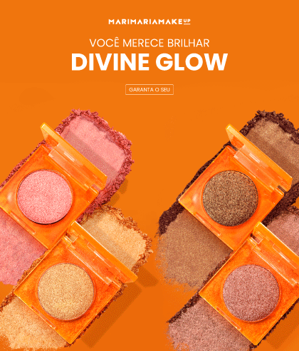
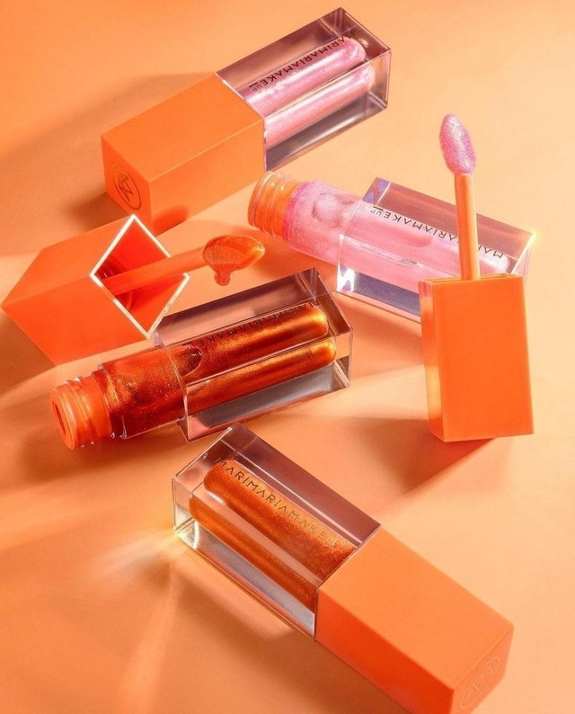
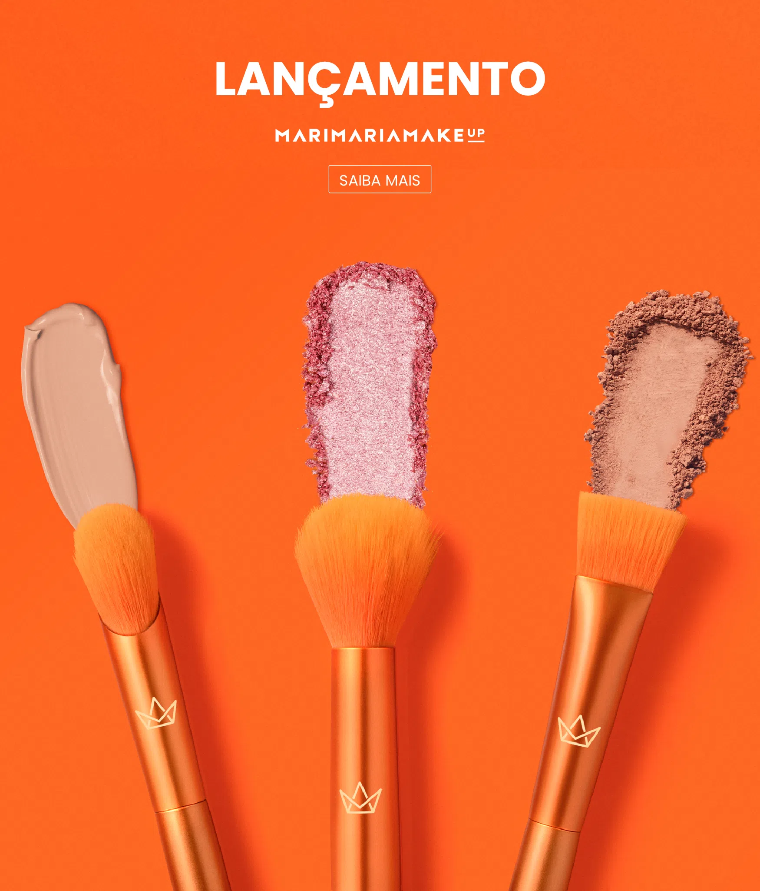

Mari Maria Makeup

Nascida em Minas Gerais, Mari Maria mora com o marido e os dois filhos em Brasília, cidade que mais gosta no país, confessou à Revista. Mari começou na web em 2014. Na época, ficou famosa por tutoriais de beleza, makes impecáveis e sardas que cobriam todo o rosto.
Produtos



Para mais informacoes